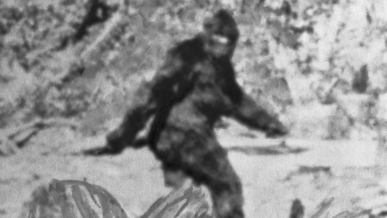

Hello there. My name is Peter Mallow and I have been searching for Big Foot over 10+ years. It's hard and arduous work. Just when you think that you found him, you realize that it's just a macho squirrel terrorizing the forests of the PNW. PEOPLE, PLEASE STOP FEEDING THE SQUIRRELS! DUE TO OVERFEEDING, THEY'RE HULKING OUT AND I HAVE BEEN MISTAKING THEM AS BIG FOOT. I'VE LOST MY REPUTATION AS A SCIENTIST BECAUSE OF THIS. PLEASE STOP FEEDING THE SQUIRRELS CHICKEN NUGGETS. JUST PLEASE STOP. Anywho, my search of 10+ years has come to an end. I have finally been able to track down Big Foot thanks to two girls, Vanessa Lopez and Shana Edouard, who were out making a vlog when they found him. I mean, they nowhere near have the crendentials I have - let's just say, they found Big Foot by mistake.
That being said, BIG FOOT IS REAL, PEOPLE! HE IS REAL! Enough with the conspiracy theories, there's actual proof that he exists as he is currently sitting in my living room sipping hot chocolate. As discovered, beasts need their hot chocolate fix-ins on cold, wintery days, too.
To watch the vlog of Vanessa Lopez and Shana Edouard when they discover Big Foot, click on the button below.
Good tidings, everyone!